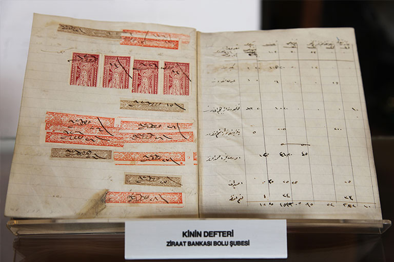

When setting up the very first Homeland Fund in the Pirot Town (Şehirköylü Town) in 1863, Mithat Pasha was inspired by the collective work tradition (imece), which already existed among Turkish customs and which was based on mutual assistance principles.
Homeland Funds took their name from the wooden crates employed. The regular affairs related with the Fund would be run by 4 Fund Custodians, consisting of 2 Muslim and 2 Christian citizens elected by the participant villagers. The journal containing the records of daily transactions, the general ledger and the cash in hand were all kept in these wooden crates. Later, for safety reasons, primitive safes made of iron by local craftsmen were employed instead of these wooden crates.
Upon the entry into force of the "Regulations on Homeland Funds" in 1867, these Funds started to operate throughout the Ottoman Empire (the Funds in Rusçuk, Eski Cuma ve Lefkoşe towns are among the first examples) and continued to serve successfully for many years.
A two thirds (2/3) portion of the profit of the Fund, which was obtained by the deduction of expenses from the incomes obtained as a result of lending operations, was used for the construction and repair works of the basic structures open for common use by public such as schools, roads, bridges in the region where the Fund was operated. In this respect, Homeland Funds also contributed to the development of the country.

However, the deteriorations observed in the operation of these Homeland Funds decreased their effectiveness. The government, considering that these adversities would be eliminated by placing them under the central administration, established "Benefit Funds" in 1883 for the same purposes. Upon the establishment of the Benefit Funds, their management was revised, recording and accounting procedures were carried out in accordance with modern and scientific principles and the Funds were subjected to the direct audit of the central government.
Although this new restructuring ensured a relatively serious management that was open to scientific audits, it did not obviate the need for an entirely new, contemporary organization.
Thus; Ziraat Bank was officially established on 15 August 1888 as a modern financial institution to undertake the functions of the Benefit Funds, and the Benefit Funds operating at that time were converted into bank branches and started their operations. The shares that made up the financial resource of the Benefit Funds until then were transferred to the Bank and the shares issued subsequently were allocated to the Bank's capital. With this move, a new era began in our history of organized agricultural loans.